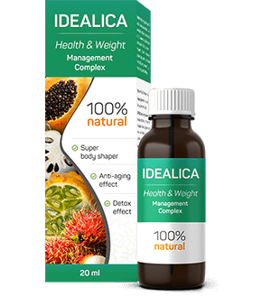

CALORIILE ȘI GRĂSIMILE NU VOR FI ABSORBITE DIN ALIMENTE! PIERDEȚI 15 KG DE GREUTATE FĂRĂ CHIMIE, DIETĂ ȘI EXERCIȚII FIZICE.
Experientă de muncă: 42 ani
¿Qué es ?

Comentariile specialiştilor:
Mureşan Emilian
Endocrinolog
Experiență profesională: 27 de ani
Cel mai important lucru în pierderea în greutate este să nu agravezi starea organismului. Din păcate, cele mai populare moduri de a slăbi nu se pot lăuda cu acest lucru. Este foarte dificil să urmezi constant o dietă, nu toată lumea poate suporta abstinența alimentară prelungită. După ce nu au atins obiectivul, oamenii se întorc din nou la pastile sau alte medicamente pentru pierderea în greutate, dintre care majoritatea provoacă un rău mare organismului, perturbă echilibrul hormonal, funcția hepatică și suprimă imunitatea. Slăbirea trebuie să fie naturală, fără afectarea proceselor interne ale organismului. Astăzi, este singurul preparat care face față cu succes acestor sarcini, fără a dăuna sănătății. Microelemente active din provoacă o accelerare a metabolismului și stimulează arderea intensivă a grăsimilor. Concentrația lor într-o singură doză de (25 picături) îmbunătățește aceste procese de cel puțin 10 ori. Sunt convinsă că acest produs este cel mai bun care a fost inventat până în prezent pentru pierderea în greutate eficientă, rapidă și inofensivă. Cel mai important, este un produs complet sigur, verificat, în care poți fi sigur 100%. "
 Boicu Cornelia
Endocrinolog
Boicu Cornelia
Endocrinolog
Experiență profesională: 18 ani
Deseori femeile vin la mine în lacrimi. Au încercat totul, dar nimic nu a funcționat, sau greutatea a revenit din nou foarte repede. Obișnuiam să le sfătui să nu intre în panică și să încerce din nou puțin mai târziu. Astăzi, totul s-a schimbat. Cea mai bună soluție este . Nu a fost niciodată atât de ușor să slăbești. Aceste picături trebuie luate zilnic fără frică pentru sănătate. Datorită , veți arde până la 5 kg pe săptămână într-un mod complet natural. Acesta este un produs complet vegetal, potrivit pentru toată lumea, indiferent de sex, vârstă și cantitatea greutăţii în exces.
Pierderea în greutate se realizează numai prin arderea grăsimii, nu și prin deshidratarea corpului. a câștigat de mult popularitate în nutriţia occidentală și acum câștigă din ce în ce mai multă popularitate în România. Personal, recomand acest remediu tuturor pacienților mei și de fiecare dată aud ca răspuns o recunoștință uriașă.

Cercetări
Rezultatele testărilor de laborator a picăturilor efectuate de Universitatea de Medicină:
Un grup de subiecți supraponderali (100 de persoane) au administrat de două ori pe zi - dimineața și seara, înainte de masă. Testul a durat o lună. În acest timp, nici unul dintre voluntari nu și-a schimbat alimentaţia obișnuită. În timpul studiului, s-au obținut următoarele rezultate:
1. Scădere în greutate de la 12 la 17 kg
– la pierderea în greutate de 12 kg - au ars 95% din depunerile adipoase
– la pierderea în greutate de 17 kg - au ars 100% din depunerile adipoase
* Pierderea, în acest caz, înseamnă degajare de grăsime.
2. Îmbunătăţirea metabolismului.
3. Creşterea tonusului muscular şi activităţii fizice.
4. Îmbunătăţirea funcţionării ficatului şi sistemului endocrin.
A fost dovedit, că are o influenţă puternică asupra accelerării metabolismului și a arderii masei adipoase. Picăturile sunt recomandate pentru persoanele supraponderale, precum și celor care au tulburări metabolice.
Experiență profesională: 27 de ani
Experiență profesională: 18 ani

Ali
Am început să iau , după 2 săptămâni am slăbit doar 4,5 kilograme = (este normal? Sau fac ceva greșit?)
Răduţ Andrei
Alina, cel mai probabil ați citit instrucțiunile incorect: este important să luați de 2 ori pe zi, 25 de picături, iar rezultatele dvs. se vor îmbunătăți semnificativ.
Cu cele mai bune urări, dr.Răduţ Andrei
Mirela
Bună, am slăbit 38 kg în 6 luni folosind acest produs. Aceasta este victoria mea! Au trecut aproximativ 2 ani, iar greutatea este încă stabilă. Mi-a plăcut mult rezultatul și faptul că nu trebuia să merg la sală. Iată rezultatele mele:
Alexandra
De asemenea, am slăbit datorită acestor picături, am reușit să îndepărtez grăsimea de pe abdomen și să-mi fac corpul mai tonifiat. Și am slăbit 41 kg.

Cristi
Înainte de a lua , cântăream 130 kg. Când eram mai tânăr, aveam un fizic atletic extraordinar, dar pe măsură ce îmbătrâneam am început să acumulez grăsime pe burtă și pe coapse. Mi-am dat seama că trebuie să fac ceva chiar acum! M-am antrenat aproape un an, dar nu am obținut rezultatul dorit. În cele din urmă, am adăugat aceste picături în dieta mea zilnică și după câteva săptămâni am revenit în formă!
Nicoleta
De ce nu vă puteți controla cu toții și apetitul? Mănâncă mai puțin și slăbește! Sunteți adulți, nu vă puteți controla?
Răduţ Andrei
Din păcate, Nicoleta nu este atât de simplu. Unii oameni nu pot slăbi în mod natural, pur și simplu prin reducerea cantității de alimente pe care o consumă. Tendința lor genetică de a fi supraponderali face dificilă pierderea în greutate, chiar dacă persoana face diete sau face exerciții fizice. Dacă acest lucru nu te privește, atunci ai noroc. Dar vă asigur că nu toată lumea este atât de norocoasă.
Cu cele mai bune urări, dr.Răduţ Andrei
Raluca
Doctorul are dreptate! Sunt în permanență la dietă, dar nu ajută deloc. Greutatea se oprește și nu dispare, chiar dacă mă înfometez toată ziua ...
Beatrice
Este ciudat faptul că mulți oameni cred că numai medicii și nutriționiștii știu despre , am înlocuit deja toată nutriția sportivă în sala noastră de sport, majoritatea antrenorilor noștri lucrează cu acest produs, toată lumea este foarte fericită, îl recomand. Aceste picături m-au ajutat să slăbesc 19 kg acum șase luni. Și acum vreau să repet tratamentul doar pentru prevenire. Este un concentrat natural și sigur pe bază de plante. Și toți prietenii mei știu despre aceste picături de mult timp, deci nu este un secret.
Mădălina
De ce există standarde? De ce trebuie să fie toată lumea subțire? De exemplu, cântăresc 79 kg, iar înălțimea mea este de 167 și nu mi-e rușine de asta. Îmi place felul în care arăt și mă simt grozav!
Răduţ Andrei
Mădălina, în secolul 21, tendințele moderne și moda fac fetele să meargă la extreme și să arate ca niște modele, de multe ori aceste extreme le afectează sănătatea. Astfel, a fost creat un produs care vă va permite să slăbiți fără să vă puneți în pericol sănătatea.
Cu cele mai bune urări, dr.Răduţ Andrei
Bianca
SOS! TREBUIE URGENT SA PIERD 9 KG! STAU ACASĂ DE CÂTEVA LUNI ŞI AM CRESCUT CU GRĂSIME DIN TOATE PĂRŢILE! DAR NU POT STA PE DIETĂ! EU CHIAR NU POT! NU AM VOINȚĂ, DIN START NU MĂ POT ABŢINE ŞI IAU ÎN GREUTATE ŞI MAI MULT. SUNT ATÂT DE LENEŞĂ, DAR ATÂT DE MULT VREAU SĂ SLĂBESC!
Răduţ Andrei
Bianca, lenea nu este cea mai bună calitate, dar aveţi noroc! este exact ceea ce ai nevoie. Cu aceste picături nu trebuie să urmaţi o dietă și să faceți mișcare! Doar urmați instrucțiunile.
Cu cele mai bune urări, dr.Răduţ Andrei
Tudor
Nici soția mea nu poate slăbi. Când ne-am căsătorit, ea cântărea 53 kg, acum 78. Pentru mine, este încă frumoasă, dar este foarte îngrijorată de greutatea ei. Mi-aș dori ca ea să se iubească pe sine ca înainte.
Estera
Am luat picăturile acum aproximativ un an, atunci am avut probleme grave cu greutatea. Și după 2 luni de administrare, am slăbit aproximativ 15 kilograme, dar mai important, kilogramele pierdute nu s-au mai întors, ei bine, poate 1-2 kilograme.

Maria
Grozav dacă funcționează cu adevărat. Până acum, sunt sceptică. Și eu cred, de obicei, mai mult în puterea de pastile sintetice decât un produs natural. Pentru pierderea în greutate, aș face orice, să ne uităm la rezultat
Răduţ Andrei
Maria, vă recomand să încercați, este un produs natural, dar extractele naturale sunt ceea ce are nevoie organismul nostru.
Cu cele mai bune urări, dr.Răduţ Andrei
Florentina
Cântăresc 97 kg și nu știu cum să scap de ele ... Mă tem că voi cântări în curând 100 kg. Ce ar trebuii să fac? Unde să comand aceste minunate picături?
Răduţ Andrei
Florentina, este important să nu intrați în panică, totul poate fi rezolvat. Începeți treptat. În primul rând, din păcate, aceste picături nu pot fi găsite într-o farmacie obișnuită. Am explicat deja de ce. În al doilea rând, comandați și urmați instrucțiunile. Și totul va funcționa.
Cu cele mai bune urări, dr.Răduţ Andrei
Elena
Salut! Sunt mamă a doi copii și, din câte îmi amintesc, încerc constant să slăbesc ... Dietele nu funcționează, pentru că țin doar câteva zile și apoi încep să mănânc totul. Nu am timp pentru sport. Am citit despre , compoziția lor naturală și sigură și m-am intrigat. Și în doar o săptămână am slăbit 6 kg! Produsul este super!